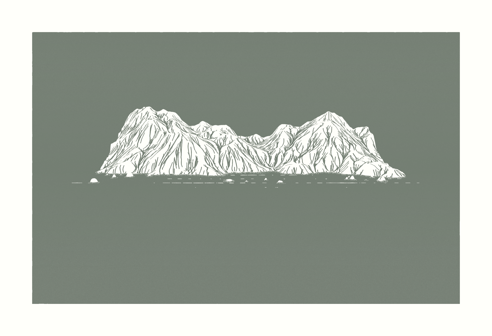
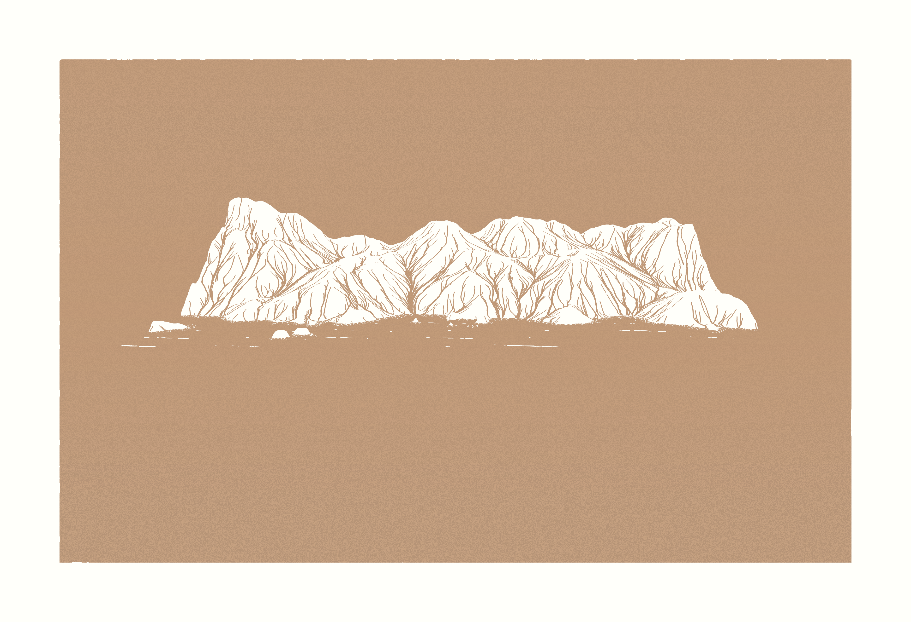
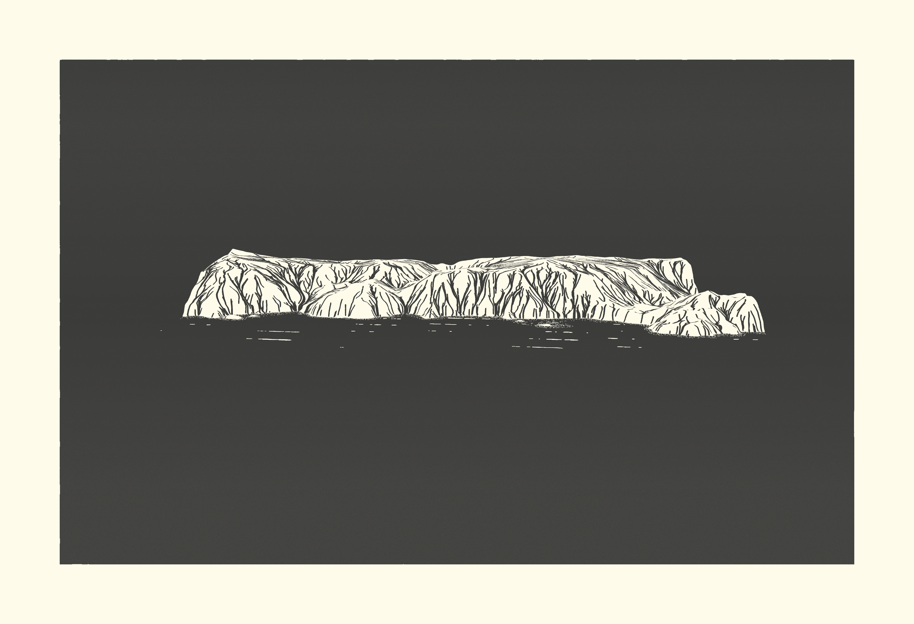
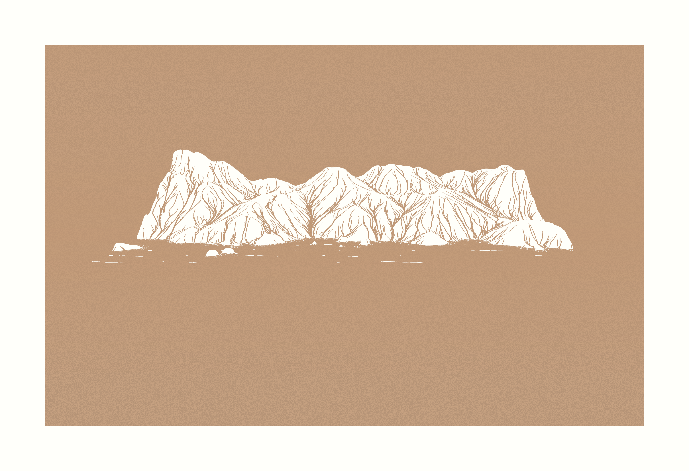
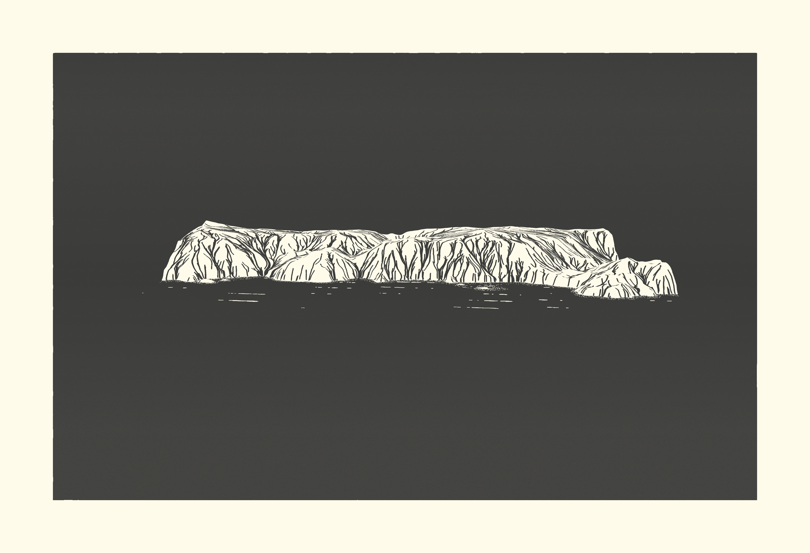
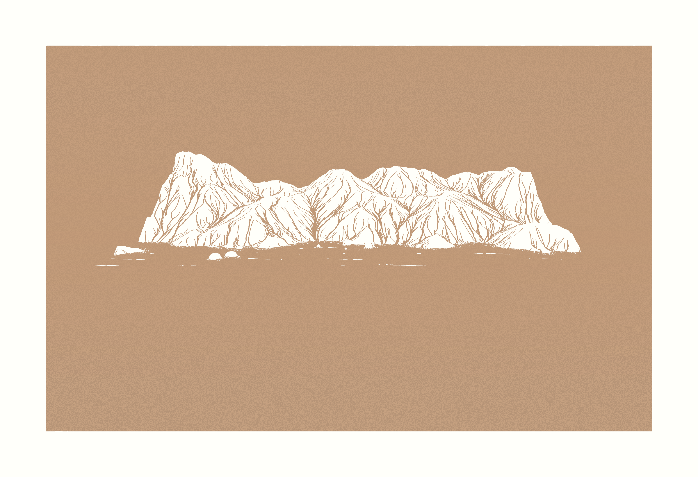
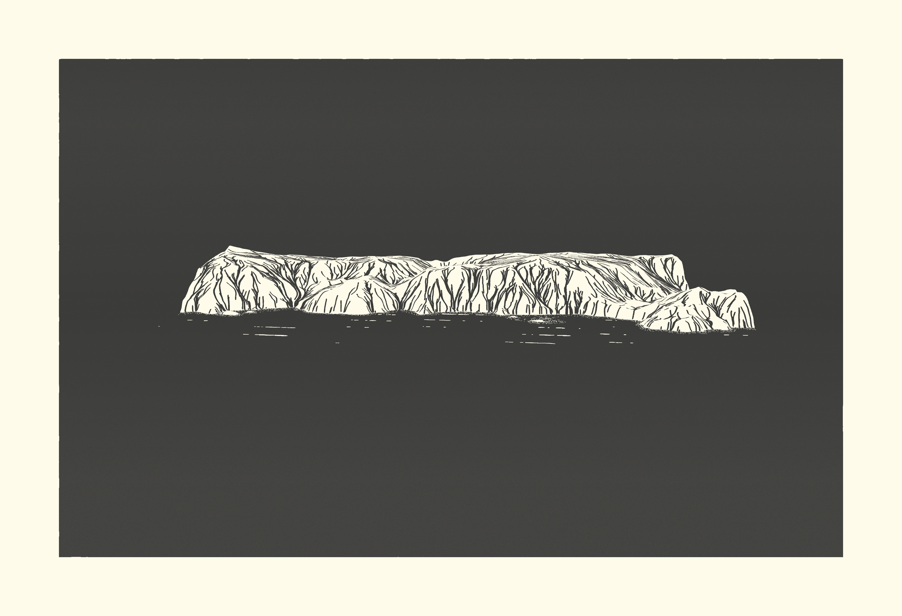

Kienan Adams
North Coast 'Carvings'
For this collection, my first foray into generative art, I was inspired by the fractal nature of coastlines (measuring their lengths can only be done by approximation due to their lengths trending towards infinity as the unit of measure decreases). I figured the rugged and rocky landscape of California's North Coast would be a great specific focus. Additionally, given my experience with linocut print-marking, I wanted to see if I could algorithmically achieve an aesthetic similar to linocut.

 




